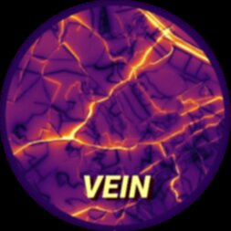

April 1, 2025
Featured • Vehicular Emissions
Advancements in the VEIN Model for Urban Emissions
Exploring the latest updates to the VEIN model and how it's being used in cities worldwide to improve air quality assessments.
Read Full Article